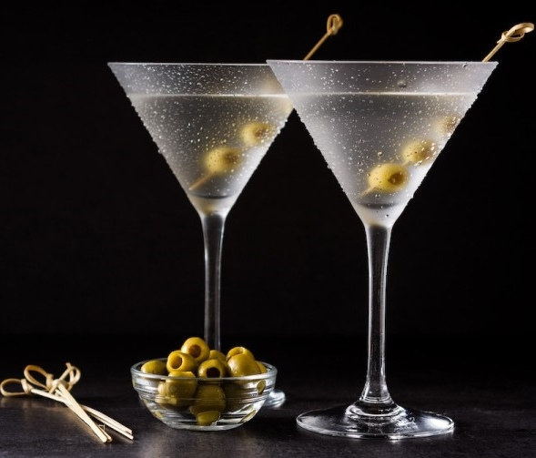

1.In a mixing glass filled with ice cubes, combine the gin and vermouth, pouring more or less vermouth to your taste.
2.Stir for 30 seconds.Strain into a chilled cocktail glass.
3.Add a dash of bitters, if desired.
4.Garnish with a lemon twist or olives.